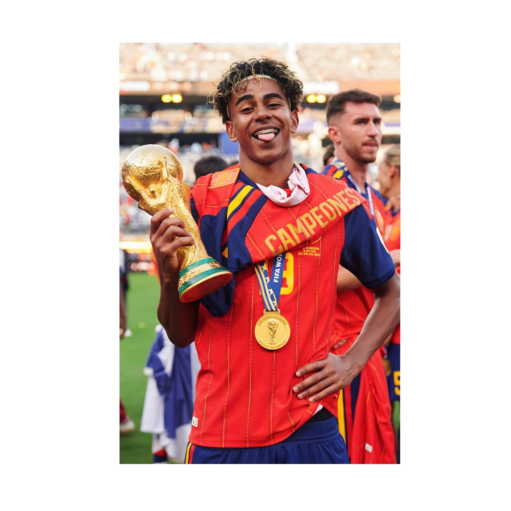

О игроке

Ламин Ямаль - испанский футболист, крайний полузащитник клуба «Барселона» и сборной Испании. В настоящее время выступает за свой родной клуб Барселона.
Факты
-
Полное имя:
Лами́н Яма́ль Насрауи Эбана -
Дата рождения:
13 июля 2007 года -
Место рождения:
Эсплугес-де-Льобрегат, Баш-Льобрегат, Барселона, Каталония, Испания -
Позиция:
крайний полузащитник -
Текущий клуб:
Барселона
Клубы
-
Барселона (2014-2023):
Выросший в молодёжных рядах Ла Масии Ламин Ямаль вскоре стал рассматриваться как один из лучших и самых талантливых игроков академии.
-
Барселона (2023-настоящее время):
20 августа 2023 года Ламин Ямаль впервые попал в стартовый состав «Барселоны» на игру чемпионата Испании против «Кадиса» (2:0), в возрасте 16 лет и 38 дней став самым молодым игроком Ла Лиги в XXI веке, начавшим матч с первых минут
Достижения
-
Серебряный призёр Лиги наций УЕФА: 2024/25
-
Чемпион Европы: 2024 года
-
Чемпион мира: 2026 года